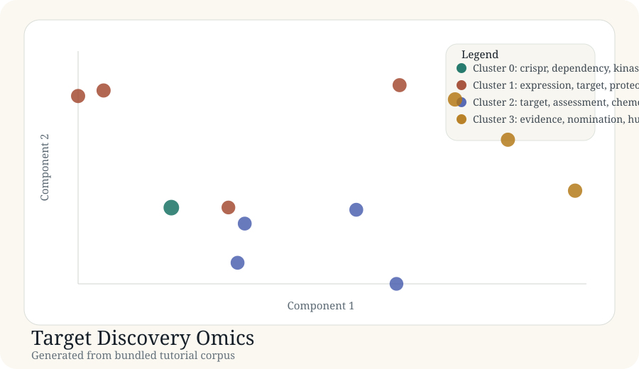

Tutorial article
Target Discovery Omics
This article documents a real generated tutorial run from the bundled corpus in docs/tutorial-data/target-discovery-omics.csv.
Background
Target discovery portfolios mix functional evidence, tissue context, tractability, and human-genetics support. A useful literature map should separate those evidence modes instead of flattening them into a single "target discovery" bucket.
Purpose
The goal is to organize a small discovery corpus into interpretable clusters that mirror how target nomination is discussed in practice.
Data used
Source file: target-discovery-omics.csv. The corpus contains 12 records spanning CRISPR screens, target-expression mapping, chemoproteomics, and genetics evidence.
| Record | Title | Year |
|---|---|---|
| target-001 | CRISPR dependency maps reveal kinase vulnerabilities | 2024 |
| target-004 | Spatial proteomics for target expression context | 2024 |
| target-007 | Chemoproteomics for ligandability assessment in target triage | 2022 |
| target-010 | Human genetics evidence boosts target success probability | 2021 |
Code used
records = load_records(DATA_DIR / "target-discovery-omics.csv") vocab, vectors, _ = build_tfidf(records) centered, _ = center_vectors(vectors) coords = project(centered, top_components(centered, 2)) labels, centroids = kmeans(vectors, 4)
Result figure

Results
| Cluster | Theme | Size | Mean probability |
|---|---|---|---|
| 0 | crispr, dependency, kinase | 1 | 1.00 |
| 1 | expression, target, proteomics | 4 | 0.78 |
| 2 | target, assessment, chemoproteomics | 4 | 0.76 |
| 3 | evidence, nomination, human | 3 | 0.81 |
Generated artifacts
Interpretation
The resulting map is especially useful for discovery teams because it separates target nomination by evidence type. That helps distinguish "biology says this matters" from "chemistry says this is tractable" and from "human genetics makes this de-risked".